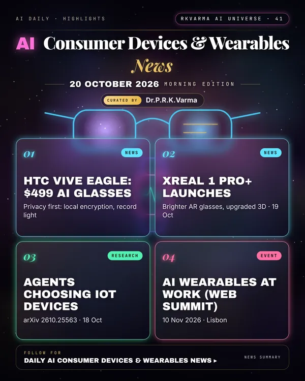

Latest updates · 20 October 2026
In the full issue →Smart glasses are multiplying: XREAL launched the brighter 1 Pro+, HTC's $499 Vive Eagle stresses privacy, and Meta's Ray-Ban and Oakley AI glasses went on sale in Portugal with Meta AI in European Portuguese.
Research, industry & policy
- XREAL 1 Pro+ is official, Phandroid · 19 Oct 2026: Brighter AR glasses with upgraded 3D, months after the original One Pro.
- HTC launches Vive Eagle AI glasses, Foro3D · 19 Oct 2026: The $499 glasses have a camera, speakers and an AI agent based on ChatGPT or Gemini, with local encryption, a recording light and no training on user data.
- Meta's Ray-Ban and Oakley AI glasses on sale in Portugal, ai.pt · 15 Oct 2026: Sales and Meta AI in European Portuguese began on 19 October.
Journals & preprints
- Learning Which Device to Call: Online Tool Grounding for LLM Agents in IoT, arXiv 2610.25563 · 18 Oct 2026: The Internet of Things (IoT) gives large language model (LLM) agents access to physical observations, but one requested capability is usually offered by several devices, and the agent's plan does not say which one to call.
Conferences, workshops & events
- Heads up: AI wearables enter the workplace (Web Summit session), 10 Nov 2026 · Lisbon: AI Summit stage session on AI wearables and smart glasses at work.
- On-Device AI Hackathon: Cleared for Takeoff, 13 Nov 2026 · San Francisco: Build projects that run entirely on-device.
- WT | Wearable Technologies Conference 2026 Europe, 16–17 Nov 2026 · Düsseldorf (at MEDICA): Wearables conference including generative-AI innovation workshop.
Why it matters
Privacy features are becoming a selling point as cameras move onto faces; regulators and bystanders will watch closely.

